Полная цепь
белка морского происхождения
От сырья и рецептур — до корма, рыбы на ферме и готовой консервной банки. Фараданех — крупнейшее и наиболее полное производственное объединение водной индустрии Ирана.
Каталог кормов
Полный ассортимент экструдированных кормов — вес мешка, цена и наличие на складе.
Более четверти века в основании отрасли
Обладая более чем 25-летним опытом в водной индустрии страны, Фараданех известна как крупнейшая и наиболее полная цепь производства белка морского происхождения в Иране. Компания играет значительную роль в самодостаточности отрасли и создала более 2500 рабочих мест. Акционеры компании последовательно инвестируют в полный цикл — от сырья до готового продукта на полке.
Ниже — десять направлений, из которых складывается эта цепь.
10 направлений деятельности
Полный цикл — от сырья и кормов до фермы, переработки, консервирования и дистрибуции внутри страны и на экспорт.
Производство кормов для водных
Годовая мощность 450 000 тонн кормов для рыб, птицы, водных и домашних животных — крупнейший производитель на Ближнем Востоке.
Рыбная мука и рыбий жир
8 заводов в северных и южных провинциях страны под контролем экспертов по качеству — ключевое сырьё для рецептур кормов.
Внешняя торговля
Импорт сырья для водных кормов и экспорт выращенных гидробионтов, водных и сухих кормов для домашних животных.
Производство добавок
Эксклюзивные рецепты и индивидуальные формулы, гарантирующие качество производимых кормов.
Завод растительного масла
Производство различных видов растительного масла и муки, используемых в собственной цепи производства.
Фермы разведения водных видов
Крупнейшие инкубационные и развивающие центры — более 60 ферм всех видов гидробионтов по стране.
Транспортировка и поставки
Более 100 специализированных грузовиков и прямые поставки на основные рынки внутри страны и за рубежом.
Переработка и упаковка
Переработка и упаковка белковых продуктов, особенно аквапродуктов, под маркой «Новый вкус» (Pazen Taraz).
Производство рыбных консервов
Годовая мощность более 15 млн банок на севере и юге страны под марками Topsy, Golden Lux, Adak и др.
Молочно-мясной комплекс
Две промышленные животноводческие фермы на 1000 голов с доильным, племенным и откормочным отделениями.
Мощности, рассчитанные на масштаб отрасли
Крупнейшая организованная сеть продаж и дистрибуции в Иране — и крупнейший экспортёр водных кормов в стране.
- Farafoodplus — собственный бренд сухих кормов для животных разных пород и возрастов.
- Крупнейшие складские площади страны для хранения сырья.
- Опытная техническая команда локализует сборку машин и производственных линий.
- Крупнейшая организованная сеть продаж и распространения продукции в Иране.
Производство, логистика и бренды
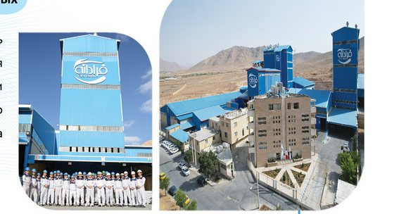
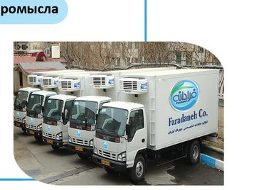
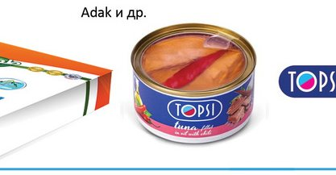
Сертифицировано на каждом этапе
Количественные и качественные проверки на всех этапах производства с привлечением опытных экспертов и современного лабораторного оборудования — химического, микробиологического и биотехнологического.
R&D и послепродажный сервис
докторов наук в штате, сотрудничающих с университетами страны
штатных специалистов с учёной степенью магистра
онлайн-заказы, визиты на фермы и семинары для клиентов
Экструдированные корма для 8 видов гидробионтов
Рецептуры под каждый вид, размер и стадию роста — с точным балансом протеина, жиров и калибра гранулы.
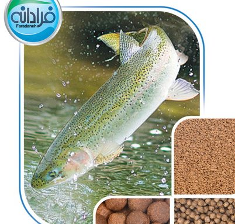
Форель
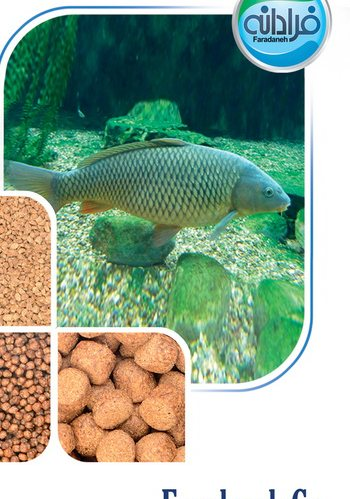
Карповые
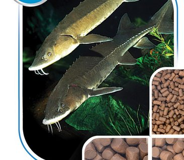
Осетровые
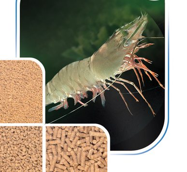
Креветка Ваннамей
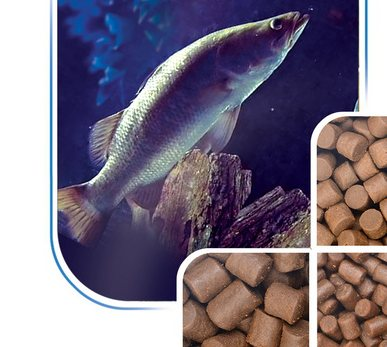
Морской окунь
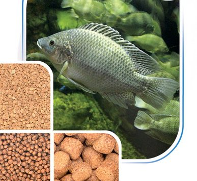
Тилапия
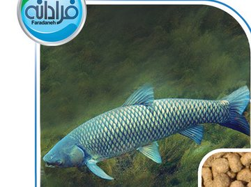
Амурской (белый амур)
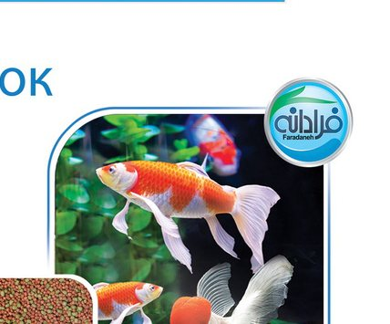
Кои и золотые рыбки
Корма для домашних животных
Отдельная линия полнорационных сухих кормов — совместная разработка с J.M Vet Group.
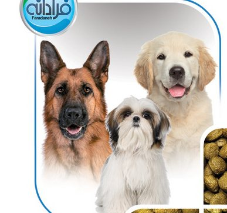
Собачья еда
Правильная формулировка для здоровья кожи, мышц и костей, иммунитета и пищеварения — на каждом этапе роста.
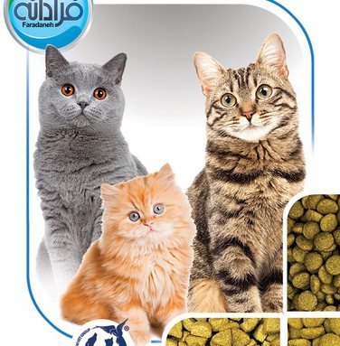
Кошачья еда
Здоровое пищеварение, здоровье мочевыводящих путей и кожи, снижение запаха фекалий, поддержка иммунитета.
Готовы обсудить поставку кормов и сырья
Оптовые поставки, экспорт, сотрудничество по сырью для водных кормов — пишите напрямую или оставьте заявку на сайте.
- Крупнейшая цепь производства белка морского происхождения в Иране
- 16 производственных линий · 450 000 т кормов в год
- 8 заводов рыбной муки · 60+ ферм разведения
- ISO 9001 · ISO 22000 · GMP · HACCP · ISO 17025